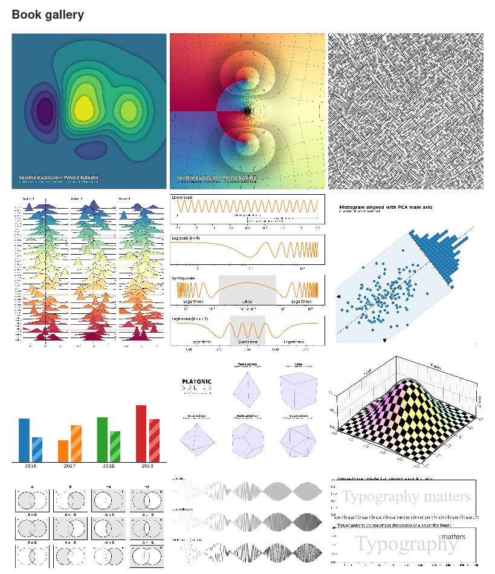

I'm not a cr🤮pto fan but... If it's bad that Mozilla takes money from Google, and it's bad that they tap the massive amount of cash hiding in cr🤮pto bros wallets, how do we expect such an important organization to get money?
Replying to @pradyunsg
Also, if taking money from Google is bad... should we cancel GS0C?
I'm not trolling, these are honest questions.
RT @numpy_team: NumPy 1.22.0 is released 🎉
Highlights include completion of type annotations in the main namespace, preliminary array API…
Replying to @gvwilson
Absolutely! This is very much needed
Replying to @MissingClara
Would love to give it a read!
Replying to @MissingClara
I see. I'm subscribed to all these PRs, trying to get a feeling of where the ecosystem is moving to. Thanks for taking the time of writing your opinion!
I started exploring @observablehq recently and it's so cool! I wonder if supporting Python cells is in their roadmap? The current alternative is gist/gh + nbviewer or binder, but it isn't as exciting 😄
Replying to @ayhanfuat, @observablehq and @senornestor
Thanks a lot! A minor annoyance is that syntax highlight is lost, but worth playing around with 🚀 Looking forward for progress in https://bugs.python.org/issue40280 and https://github.com/pyodide/pyodide/issues/2000
Replying to @rabernat, @observablehq, @davidbrochart and @ProjectJupyter
Thanks @rabernat ! I see this addresses the reactive part. @observablehq has other powerful features, it makes it so easy and nice to share and reuse notebooks made by others
Replying to @jaime_rgp and @ocefpaf
Greetings from Jose Luis 💀
Replying to @psychemedia
The proposal explicitly says that Jupyter Notebook v7 "will provide an equivalent user experience to the current (version 6) application". Why does this trigger you to find a new editor?
Replying to @Linux_Mint
Downloading updates at ~35 kBps...
Replying to @kearneymw
.ipynb_checkpoints/
"rendering is now performed primarily in the browser using open-source libraries like nbconvert"
How does @github run nbconvert in the browser? cc @ProjectJupyter https://twitter.com/GHchangelog/status/1479561436993134594
Replying to @DougBlank, @github and @ProjectJupyter
I'm not sure if your comment applies to the changes introduced yesterday https://github.blog/changelog/2022-01-07-jupyter-notebooks-and-specialized-file-formats-display-faster/ since it explicitly says that nbconvert is used. But I'm guessing from incomplete information here.
Replying to @DougBlank, @github and @ProjectJupyter
https://twitter.com/gwincr11/status/1479840894215991301
Replying to @gvwilson, @rowancockett and @choldgraf
This is something we've discussed at @readthedocs a lot. Should RTD aim to set up this complex toolchain for users as one of its features, or instead seek alternative ways of generating static docs aka PDFs (rst2pdf, weasyprint, rinohtype, paged.js)?
Replying to @five9a2, @gvwilson, @choldgraf, @rowancockett and @TiffanyTimbers
Good point. I think folks usually want something they can read offline, and by default we think of PDFs for that (since it's too easy to accidentally save a crippled website that suddenly is full of remote URLs that can't be opened).
Replying to @gvwilson, @choldgraf, @Hao_and_Y, @bolkerb and @rowancockett
Or, related to your thoughts a few days ago https://third-bit.com/2021/12/26/effort-estimation/, maybe the answer is LuaTeX https://tex.stackexchange.com/a/4091/2488
Replying to @gvwilson
I once bookmarked a site that explained "the 3 things that TeX got right" (line/page breaking algorithm and another 2, possibly math typesetting) and how they were building a modern system around them. But after some minutes I'm unable to find it...
Replying to @gvwilson
The common theme I see in the many responses to this tweet is that we don't agree on how such replacement should look like. So we can only strive to have different systems with different features and tradeoffs and let the ecosystem evolve.
RT @cmaureir: Today's a great day for the Python Community: with the help of around 200 people, the Spanish translation of the official doc…
Replying to @DrJohnWagner
https://github.com/rougier/scientific-visualization-book#book-gallery
Your point about suboptimal defaults stands, but definitely not the best way to frame it 😉

RT @TalkPython: Want to learn something this weekend? We just released a new course over at Talk Python: Static Sites with Sphinx and Markd…
Important article to read today. https://twitter.com/mitsuhiko/status/1480336537632059396
Replying to @tk0miya
Google Translate fails so bad with Japanese 🙈
RT @readthedocs: Sphinx and Markdown around the world in 2021 🌎🌍🌏 with special mention to @ExecutableBooks. Read our new blog post! https:/…
RT @ProjectJupyter: Sign ups are now open for the first Jupyter Community Workshop of 2022! It features @FrankElavsky on how to build inclu…
RT @BouillonCourt: #release − WeasyPrint v54.0
Footnotes support finally comes into WeasyPrint thanks to http://codeandco.com 🎉
This re…
RT @PamphileRoy: Great email in my inbox from @jetbrains! They agreed to help #scipy by providing all maintainers a license to their IDEs!…
RT @gjbernat: Let's add TOML to the Python standard library ☺️ https://www.python.org/dev/peps/pep-0680/
RT @oscafrica: You may have heard whispers about this.
You may have dreamt about it too.
Open Sourcerers, the long-awaited Open Source F…
Today 9 years ago Aaron Swartz committed suicide, after being arrested by @MIT police and prosecuted by the then U.S. Attorney for Massachusetts Carmen Ortiz for massively downloading academic journal articles from @JSTOR. He was 26 years old. #AaronSwartz
RT @CienciaConFutur: La comunicación de la ciencia, imprescindible para el avance del conocimiento, da soporte uno de los negocios editoria…
This is INSANE https://twitter.com/NatureNeuro/status/1480909476546891784
RT @NathanShammah: This work on an automated way to calculate quantum cumulants looks awesome. Been discussing for years, e.g. with Fabrizi…
Replying to @yabellini
Right?? But it looks like APCs are increasing... and coming from top journals, the scam is becoming more obvious. Exasperating 😓
RT @ProjectJupyter: Are you a #Jupyter user ? The new release of #IPython 8.0.0 makes your experience better in notebooks. Tracebacks now h…
RT @readthedocs: Faster creation of corporate custom domains, documentation improvements, more privacy: read our January newsletter https:/…
Replying to @gvwilson
Found it: @simoncozens SILE https://sile-typesetter.org/what-is/#sile-versus-tex and it's scripted in Lua. Version 0.12.1 released 12 hours ago https://twitter.com/OlivierNicole1/status/1440775465673781253
Replying to @Danilomg34 and @Pulgar_Panda
Precisamente, esta es la respuesta de las editoriales a Sci-Hub.
Nature Neuroscience es de acceso abierto, todos podemos leer sus artículos. ¡Albricias, ciencia abierta!
Pero quien quiere publicar ahí, 10 000 € de peaje. Nos mean y dice @ANECAinfo que llueve.
@pakitochus
RT @juanluisback: @Danilomg34 @Pulgar_Panda Precisamente, esta es la respuesta de las editoriales a Sci-Hub.
Nature Neuroscience es de acc…
Replying to @esc___
Wowwwww 😍
RT @esc___: Interesting read about #opensource, #astropy, the #jwst and also funcding: https://github.com/readme/featured/webb-telescope-astropy
RT @ecanrog: Más de 20.000 millones en los fondos Next Generation para la digitalización de Españita y todavía no existe ni una API para co…
RT @CriticalStress_: Don’t worry! Nature will soon be providing alternative payment methods to allow all scientists to easily afford these…
RT @isidroaguillo: NO al factor de impacto. Lo explico: Supon que para un indicador se saca la media de todos los investigadores de una Uni…
RT @jezdez: > NASA did decide in 2020 that maintenance of software is an allowable expense. “That was a major victory for Astropy,” Cruz sa…
RT @J_B_Alvarez: Episodio 17 🐍⚙️, by @juanluisback https://astrojuanlu.substack.com/p/episodio-17-?r=zc6en&utm_campaign=post&utm_medium=email
RT @gmarkall: Numba (@numba_jit) 0.55 is out - supporting Python 3.10, NumPy 1.21, and lots of other changes: https://numba.readthedocs.io/en/latest/release-notes.html#version-0-55-0-13-january-2021
E.g.…
RT @poliastro_py: poliastro wishes everyone a merry new revolution around the Sun! 💫 Read our December updates in the @NumFOCUS newsletter…
_Now_ I can start using Python 3.10! https://twitter.com/numba_jit/status/1481992809385181184
Replying to @reydelhumo
¡Esta foto lo tiene todo! 😋
RT @ArmitageDW: Part of me feels guilty about writing these, but I feel strongly about equitable access to scientific publishing and ethica…
RT @choldgraf: Just a reminder that the more twitter followers you have, the more your words have a non-linear impact on their target. Othe…
RT @ocefpaf: What is happening to @Mbussonn reminds me why I left folium. Maintaining a high profile library is not easy and people attacki…
Replying to @raymondh
Next time, try opening an issue in the GitHub issue tracker instead of argh-complaining on Twitter to your +73k followers. Maintainers of open source projects will thank you.
Can we do less subtweeting and more @-telling folks "this was a mistake, do a proper apology, and don't repeat that again"?
Replying to @pradyunsg
Not necessarily on social media. They could send an email or something, I'm not here for the show. I see your point about "there is always N > 0 angry tweeters that will consider it a non-apology", but ignoring the issue or deflecting blame surely guarantees a bad one.
Replying to @pradyunsg
And the rest of us throwing our hands to the air saying "people should be nice" is also guaranteed to not have absolutely any effect, IMHO.
Replying to @story645 and @pradyunsg
That's very true 😓
Replying to @jezdez and @pradyunsg
Subtweets all the way down 🙃
I don't necessarily mean dragging more people in like "hey, this person made a mistake, let's all tell them". But, if you pass by the thread, and spot shitty behavior, why not call that person out in a polite manner? Not necessarily in public.
Replying to @jezdez and @pradyunsg
Especially if, as @story645 says, you wield comparative power. https://twitter.com/story645/status/1483021973139693569
Replying to @jezdez and @pradyunsg
It didn't even occur to me to reach out to the CoC teams, assuming that they would be mostly in charge of interactions happening through "official channels" (whatever that means, but definitely not this case) or that they should be a "last resort". But maybe you're right.
RT @pradyunsg: This is an appreciation tweet for @tk0miya. Takeshi does some incredible work for the Python documentation ecosystem.
A dec…
Thanks for the shoutout on @TalkPython, @pradyunsg ♥️ I'm stoked that the new #sphinxdoc tutorial is getting some love. Wouldn't have been possible without the support from the community! https://twitter.com/TalkPython/status/1483601217058050049
Replying to @sigmavirus24
A thousand times this.
For me, the difficult thing is not kicking out grifters, sexual harassers, and stalkers though (big, obvious red flag 🚩). There are subtle ways of poisoning a community - toxic people are sometimes well-intentioned. But it's important to detect them.
Replying to @gsingers
Both GitHub and GitLab make it fairly straightforward to propose changes these days: edit on the web editor, click "propose changes", done (no need to fork & clone). I'm not sure how one can have a vetted approval process (i.e. not a wiki) that is simpler than this...
I'm looking for a JupyterHub-as-a-service for small classes (30-60 students) with light workloads over definite periods of time (1-3 months). What are the options? Is this something @2i2c_org could provide, or are they focused on big communities? cc @ProjectJupyter @yuvipanda
RT @readthedocs: Excellent write-up on how to publish your Jupyter Book project on Read the Docs! ♃📖 https://twitter.com/amoroso/status/1484194864736747521
Replying to @amittrathi, @2i2c_org, @ProjectJupyter and @yuvipanda
I don't like Google Colab UI, I don't like how they reinvented Jupyter notebooks in a slightly but annoyingly incompatible fashion, and I don't like tying myself to Google in general.
I hope Yjs + JupyterHub will render Colab outdated. (And then it will be @killedbygoogle 😜)
Replying to @rabernat, @2i2c_org, @ProjectJupyter, @yuvipanda and @2i2c
Thanks both! https://twitter.com/colliand/status/1484228137823076352 I'll send an email then :)
Replying to @tai271828, @2i2c_org, @ProjectJupyter, @yuvipanda and @InfuseAI
Maybe! I'll explore it more, thanks!
Replying to @lais_bsc, @2i2c_org, @ProjectJupyter, @yuvipanda and @iaktech
QHub looks awesome! Maybe QHub-as-a-Service? 😄
Replying to @Enroweb, @pierrepo, @2i2c_org, @ProjectJupyter and @yuvipanda
I love JupyterLite! But it lacks a git command line, can't use it for what I want.
RT @Mala_Leche: Episodio 18 🐍⚙️, by @juanluisback https://astrojuanlu.substack.com/p/episodio-18?r=hyh7w&utm_campaign=post&utm_medium=email
"And I think somebody somewhere must be tolling a bell.
And the last thing I see is my heart
Still beating,
Breaking out of my body and flying away,
Like a bat out of hell."
Meat Loaf and Jim Steinman are now gone, but their music will stay with me forever. RIP 💔
RT @_w0bb1t_: IBM slide, 1979 ..
RT @mariatta: NBD, just making a release on Friday 😛
📣 Gidgethub v5.1.0 is out:
- Handle HTTP 202 Accepted status (PR by @juanluisback)
- g…
RT @DGlaucomflecken: Nature does open access
Replying to @PilaRicoCastro
Una estrategia de ciencia abierta que no ataje los APCs abusivos es una estrategia incompleta. En Nature ya van casi por 10 000 €. ¿Cuánto más se va a tensar la cuerda? https://twitter.com/NatureNeuro/status/1480909476546891784
Replying to @lluisanglada
https://twitter.com/juanluisback/status/1485635459678359555
Replying to @choldgraf, @ExecutableBooks and @ProjectJupyter
Wondering if using @marcwouts jupytext MyST notebooks would play along nicely with this, essentially rendering everything correctly both on JupyterLab and on HTML documentation 😄 I want to use MyST everywhere!
RT @melissawm: We are planning for SciPy community meetings for 2022 - all are welcome 💗
Details:
- https://hackmd.io/@tupui/scipy-meetup
- https://t.co…
RT @PilaRicoCastro: Legitimate scientific communication platforms need to be given back to public institutions. Publishing incentives and r…
RT @danielskatz: The 1st paper in our (@danielskatz @npch) Software Citation, Indexing & Discoverability @PeerJCompSci special issue (https…
RT @ralfgommers: meson-python is coming along nicely - it works with SciPy now. Great to see how @MissingClara is tackling this topic with…
About time! https://twitter.com/json_dirs/status/1486135162505072641
Replying to @json_dirs
Keyword "steganography".
Replying to @ecanrog and @cryptosyllabus
Solo he leído el principio y ya me parece brutal... Esto es para digerirlo con calma
Replying to @richardpelgrim
2-3 years is a short timeframe, it took Python 15 years if we count from the creation of NumPy (almost a decade if we count from the creation of pandas) to be in that position. I vote for "no, never". I'm curious about the future though, maybe I'm totally wrong!
RT @readthedocs: Sphinx 4.4 is out, and other #sphinxdoc extensions got new releases too! We made an abridged summary in our latest blog po…
Replying to @AdamChainz
git stash --staged
Finally!
Replying to @pwang, @alex_wykoff and @matrixdotorg
Discord is down https://discordstatus.com/incidents/pllv57603svq
(Yes, apparently DAOs mostly hang around on a centralized chat)
👏🏼 Congrats @tk0miya! And thanks @readthedocs ♥️ Long live #sphinxdoc https://twitter.com/tk0miya/status/1486502270787526662
Now that Windows can run Linux GUI apps from WSL, will resource-constrained libre projects like @inkscape, the GNU Image Manipulation Program, and others divert resources away from supporting Windows natively? And if not, why not? cc @lgworld https://twitter.com/gmarkall/status/1486648594966929408
Fibra instalada con @SomConnexio, y móvil en camino. Las cooperativas de servicios han venido para quedarse, no hay vuelta atrás 💪🏼
Today I have some bittersweet news to share: it's my last day as Developer Advocate at @readthedocs. 💔
I leave the company on good terms after having so much fun and having learned a lot. 🧵
Replying to @juanluisback
But now I'm confident that it was the right decision, and that I want to be an Advocate for many years. And that was thanks to being in a place like @readthedocs (a tiny company with a huge mission) and having mentors like @ericholscher (a million thanks ♥️) 👇🏼
Replying to @juanluisback
Before I started at RTD I was burned out, overworked, and felt that I needed a long vacation. And then I got offered my first Advocate role, so I had lots of questions. Would I do a good job? Should I turn down the offer, rest, and charge batteries before completely switching? 👇🏼
Replying to @juanluisback
I learned so much about #sphinxdoc, marketing, advocacy, business, technical writing. I could apply my knowledge (err obsession?) about Python packaging and its scientific ecosystem in many ways. I filled gaps that needed to be filled time ago. I'm so thankful! 👇🏼
Replying to @juanluisback
Thanks again to the beautiful #sphinxdoc and #writethedocs communities. I'll announce my next steps in a few days, but expect more advocacy, more open-source, more PyData, more talks, and surely more docs.
Keep rocking 🤘🏼 https://youtu.be/pVFjo8XINAs
Replying to @TerraMeijar
Thanks a lot Vuyisile!
Replying to @0xShreyas
Thanks Shreyas! 🙌🏼
Replying to @reydelhumo
Thank you, my dear friend, working with you was a dream come true ♥️ Have a good trip back home, and see you in person very soon!
@PyDataMad ¡Knock knock! 🚪 https://www.meetup.com/PyData-Madrid/events/283522463/
Replying to @fvonbergen and @readthedocs
Thank you Fede!! 🤘🏼
Replying to @pradyunsg
Explaining whether they should use conda or pip to install a certain package without getting too deep into the rabbit hole...
RT @Mala_Leche: Episodio 19 🐍⚙️, by @juanluisback https://astrojuanlu.substack.com/p/episodio-19?r=hyh7w&utm_campaign=post&utm_medium=email
Replying to @cfbolz and @pradyunsg
Same here. For my Python I and Python II courses, I stick to whatever the latest Anaconda Individual Edition brings. Then I teach them to create their own virtual environments in Advanced Python and ruin their lives forever 😂
Replying to @rykovd
Thanks a lot Denis! 🙌🏼 Hope we can have a beer in Barcelona soon!
RT @mdtrevisani: If you need to update the dependencies of python recipes on @condaforge , in an open PR please call "@conda-grayskull show…
I finally got to listen to this! Very interesting historical insight on how the Python Array API Standard was created. https://twitter.com/ralfgommers/status/1463098578642026499
RT @egonwillighagen: "upon request" is not a data availability statement... it's an euphemism for "no, the data is not available"
Replying to @LeahAWasser
Thanks a lot Leah! I won't go far - probably closer to @pyopensci than ever :)